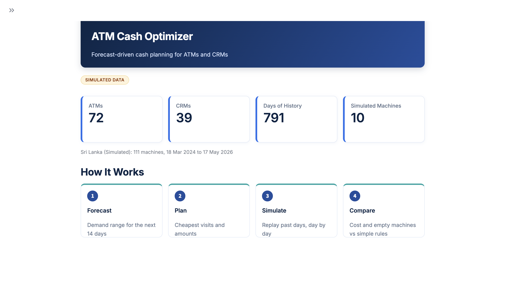
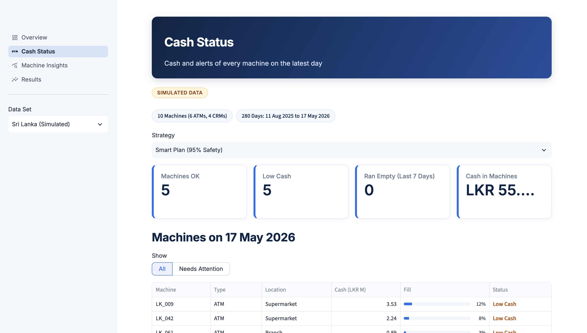
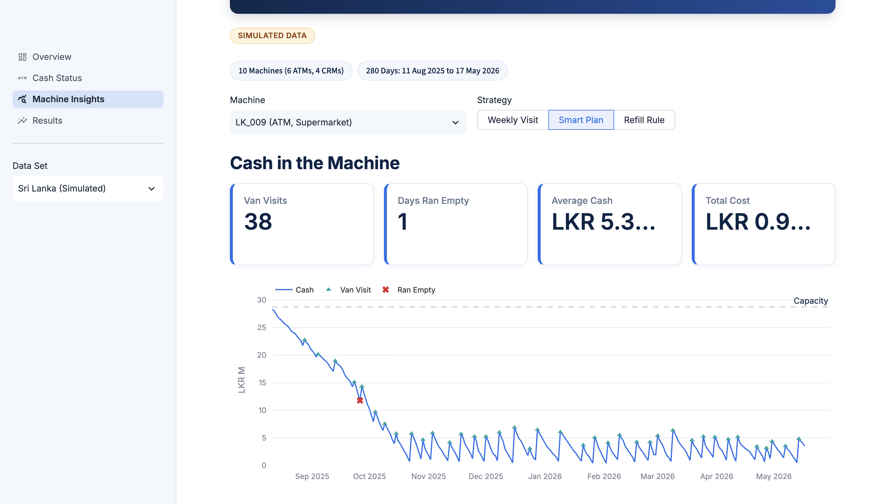
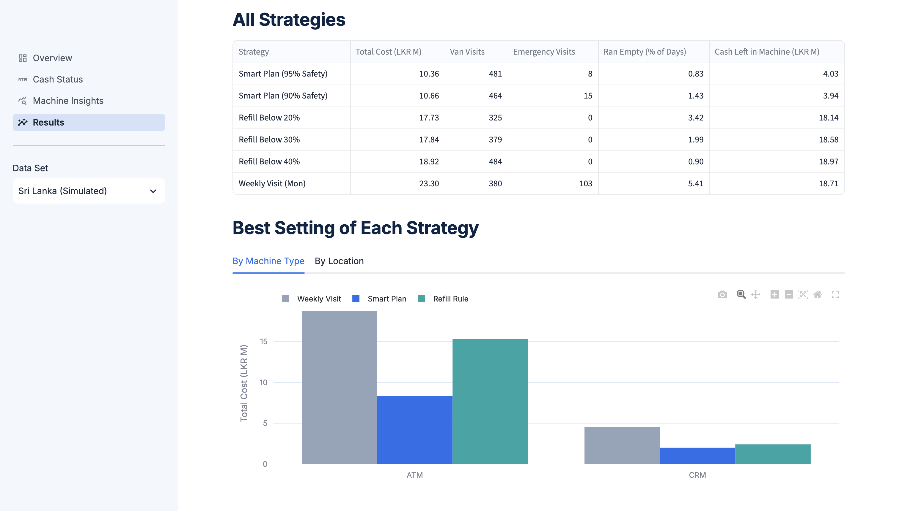

Cash planning for ATMs and CRMs, driven by forecasts.
Banks fill cash machines on simple rules. This project forecasts how much cash each machine will need and plans the cheapest van visits. Tested on 280 days of data, it cut cost by 35 to 42 percent.

The Problem
- Too little cash. The machine runs empty. Customers leave, and an emergency van costs double.
- Too much cash. Money sits in the machine and earns no interest.
- Every visit costs money. A van trip to one machine costs around LKR 15,000.
- Simple rules miss the calendar. Poya days, Avurudu and salary week change demand, and vans do not run on holidays.
The Solution
Forecast
Predict each machine's demand for the next 14 days as a range, not one number.
Plan
Choose visit days and how many notes of each type to load, at the lowest total cost.
Test
Replay past days and compare the plan with the rules banks use today.
Architecture
Each step reads the previous step's tables, writes its own, and stops. Nothing runs in the background.
Built with Python, pandas, DuckDB, PySpark, LightGBM, statsforecast, PuLP, MLflow, Streamlit and Plotly.
Technology Choices
| Need | Choice | Why |
|---|---|---|
| Storage | Parquet + DuckDB | SQL on plain files. No database server to run. |
| Feature building | PySpark | Each day becomes 14 training rows. Spark scales this to larger networks. |
| Forecasting | LightGBM, quantile loss | Gives a range (q05 to q98), so the plan can keep a safety buffer. |
| Benchmarks | statsforecast | Simple methods the model must beat to be worth it. |
| Planning | PuLP + CBC | Finds the cheapest plan that follows every rule. Free solver. |
| Experiment tracking | MLflow | Keeps every run's settings and scores, so results can be compared. |
| Dashboard | Streamlit + Plotly | Python only. Reads the results directly. |
| Data checks | pydantic + pandera | Wrong settings or broken data fail early. |
Left out on purpose: Prefect, FastAPI, monitoring and Docker. They suit an always-running system. This project runs in batches on a laptop, with at most 4 CPU cores.
Results
280 days replayed on 10 machines per data set. Every strategy followed the same capacity, holiday and lead-time rules.
| Data set | Smart plan | Best simple rule | Cost saving | Days a machine ran empty |
|---|---|---|---|---|
| Sri Lanka (simulated) | LKR 10.36M | LKR 17.73M | 41.6% | 0.83% vs 3.42% |
| UK ATMs (real data) | LKR 7.30M | LKR 11.31M | 35.4% | 0.23% vs 0.00% |
The best simple rule was "refill when cash drops below 20%". Most of the saving comes from less idle cash: the rules fill machines to the top, the smart plan loads what is needed.
Forecast accuracy
| Data set | LightGBM | Best simple forecast |
|---|---|---|
| Sri Lanka (simulated) | LKR 1.96M | LKR 2.26M |
| UK ATMs (real data) | LKR 1.63M | LKR 1.52M |
Average error of the 14-day total. Lower is better.
Dashboard



Was It Successful?
Lower cost. 35 to 42 percent cheaper than the best simple rule.
Fewer empty machines on the Sri Lanka network: 0.8% of days instead of 3.4%.
Better forecasts. Clearly better on the Sri Lanka data. On real UK data the middle forecast is close to a simple weekly average; its value is the range used for safety stock.
No empty machines on real data. A few empty days (0.2%), against none for the best rule, but at a much lower cost.
Runs on a laptop. Each step finishes in under 5 minutes on 4 cores. 71 automated tests run on every push.
Limitations
- The Sri Lanka data is simulated. No real bank data was available, so it is built from UK data with assumed holidays, locations and note mix. The forecast learns some of those assumptions back.
- The real data is old. NN5 covers 111 UK ATMs from 1996 to 1998.
- Costs are estimates. Visit fees, interest and penalties are placeholders, not bank figures.
- Small simulation sample. 10 machines per data set, to keep each run short.
- Batch only. It runs on saved data. It does not connect to live machines or a cash-in-transit company.